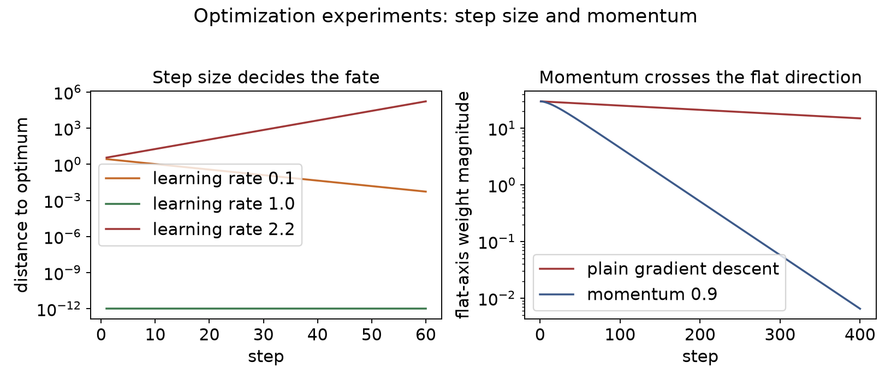

第 5 章 · 初始化与训练
先还一笔账：初始化怎么推
训练零件齐了，还差把梯度变成更新。
两集前直接给了 He 初始化的结论。
初始方差取入口数一半的倒数。
这一集先补推导，再进训练与优化。
依据：原书第 283、287 页
本集路线
先还账：初始化推导 5.59–5.61
再进正题：SGD、学习率、动量
最后：优化器六件套与实验
正课第三十七集
01 / 10
推导 · 方差与 ReLU
方差守恒：ReLU 砍掉一半
让相邻各层的激活方差大体相当。
2010 年建议：方差取入口数的倒数。
但它假设激活在原点附近近似线性。
ReLU 把负的一半截成零。
依据：原书第 283 页
V
l
= 2/n
l
式 5.59–5.61：n 是入口数，V 是权重方差
正课第三十七集
02 / 10
结论 · He 初始化
答案：入口数一半的倒数
每层砍一半，就把初始方差补成两倍。
V 等于 2 除以 n，也就是式 5.61。
这条规则通称 He initialization。
初始化至今仍是活跃的研究方向。
依据：原书第 283 页
三个式子
5.59：加权和的方差
5.60：过 ReLU 只剩一半
5.61：V=2/n
正课第三十七集
03 / 10
正题 · 训练与优化
零件齐了，只差一个更新算法
结构、激活、正则、损失、初始化都定了。
梯度也会算，但还差权重更新。
视觉任务常用高斯牛顿这类二阶方法。
深度学习规模太大，这条路走不通。
依据：原书第 287–288 页
两条路
高斯牛顿：先量整张地图
深度学习：每步抽一小批估方向
于是有了 SGD 系列
正课第三十七集
04 / 10
SGD · minibatch
SGD：一小批样本估方向
不再加总全部样本，只评估一小批。
单样本方向噪声很大。
式 5.71：把小批次 B 的损失加起来。
批大小常见从三十二到八千。
依据：原书第 288 页
E
B
(w) = Σ
n∈B
E
n
(w)
式 5.71：B 就是一个 minibatch
正课第三十七集
05 / 10
更新 · 学习率
学习率决定每步走多远
更新式：权重减去学习率乘梯度。
式 5.72 和 5.73 是同一件事。
学习率要小心调，避免冲过头。
常见做法：先取大一点，再随时间调小。
依据：原书第 288 页
w ← w − αg
式 5.72–5.73；α 是学习率
正课第三十七集
06 / 10
动量 · momentum
动量：给更新加一段记忆
普通梯度下降容易在平坦处停摆。
动量把梯度做成指数衰减的滑动平均。
式 5.74 更新速度，5.75 更新权重。
动量系数常见取零点九到零点九九。
依据：原书第 289 页
v ← ρv + g；w ← w − αv
式 5.74–5.75；ρ 是动量系数
正课第三十七集
07 / 10
优化器 · 六件套
从 SGD 到 Adam 家族
Nesterov：梯度算在预测位置上。
AdaGrad、RMSProp：按梯度大小调步长。
Adadelta：参数变化量也做滑动和。
Adam、AdamW：合成框架，加解耦衰减。
依据：原书第 289–290 页
主流
Adam 和 AdamW 最流行
学习率仍要小心设定
超参怎么调还是开放问题
正课第三十七集
08 / 10
实验 · 三条曲线
看图：学习率、动量当场验
左图：三个学习率的收敛轨迹。
右图：窄谷里 SGD 与动量对比。
五层 ReLU 网络，末层信号留在零点八六。
四百步：动量推进到零点零零六五。
依据：本集实验

左：三个学习率的收敛轨迹；右：窄谷中 SGD 与动量对比｜程序生成，未用教材或论文原图
正课第三十七集
09 / 10
收束 · 定量账与作业
定量账对上了，下一站卷积
稳态位移等于梯度除以一减动量系数。
实测一点五，理论也是一点五。
裸梯度每步零点一五，动量放大十倍。
作业：动量系数改成零点九九再跑窄谷。
依据：原书第 289、291 页
下一集
梯度变成更新，训练循环闭环
图像任务还缺卷积
原书第 291 页起进入 5.4
正课第三十七集
10 / 10